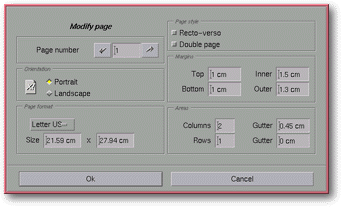

<!-- Documentation Xclamation (c)1994-2000 AXENE contact axene@axene.org>
<html>

<head>
<title>Modify page</title>
</head>

<body BGCOLOR="#FFFFFF" BACKGROUND="Images/back.gif" TEXT="#000000">

<p ALIGN="right">  </p>

<p><br>
<br>
This dialog box allows the user to individually format each page of a document. This box
completes the work of the '<a HREF="Box_New_Document.html">New document</a>' dialog box by
modifying the specifications initially defined. This box can only be opened through the <a HREF="Pager.html">Page Manager</a>'s <a HREF="Menu_Context.html#cm_pager">contextual menu</a>.
The first page selected in this box will be the one from which the contextual menu was
opened. <br>
<br>
</p>

<hr>

<p><br>
</p>

<p align="center"> <br>
<small><i>Screen shot: Modify page dialog box </i></small></p>

<p><br>
</p>

<hr>

<p><br>
</p>

<h3>Left portion of the dialog box:</h3>

<ul>
  <li><a NAME="left_arrow_icon">The left arrow button <b>shifts to the preceding page</b>. Its
    page number and specifications will be displayed in the rest of the box. </a><br>&nbsp;</li>
  <li><a NAME="page_number_textfield">The <i>&quot;Page number&quot;</i> text field displays
    the number of the page whose characteristics are currently displayed; it is possible to <b>select
    another page for modification</b>. This value must be set between 1 and the total number
    of single pages in the document. Double pages are numbered consecutively. </a><br>&nbsp;</li>
  <li><a NAME="right_arrow_icon">The right arrow button <b>shifts to the following page</b>.
    Its page number and specifications will be displayed in the rest of the box. </a><br>&nbsp;</li>
  <li><a NAME="orientation_frame">The <i>&quot;Orientation&quot;</i> section functions just as
    in the '</a><a HREF="Box_New_Document.html#orientation_frame">New document</a>', dialog
    box, except that it only acts upon the currently selected page. <br>&nbsp;</li>
  <li><a NAME="page_format_list">The roll down <i>&quot;Page format&quot;</i> menu functions
    just as in the '</a><a HREF="Box_New_Document.html#page_format_list">New Document</a>'
    dialog box, except that it acts only upon the currently selected page. <br>&nbsp;</li>
  <li><a NAME="size_textfields">The two <i>&quot;Size&quot;</i> text fields are identical to
    those in the '</a><a HREF="Box_New_Document.html#page_format_list">New Document</a>'
    dialog box, except these specifications affect only the currently selected page. <br>&nbsp;</li>
</ul>

<p><br>
</p>

<h3>The right portion of the dialog box:</h3>

<ul>
  <li><a NAME="recto_verso_button">The <i>&quot;Front/Back&quot;</i> button is activated if a
    left page is selected. Activating this button shifts a right page to a left page, and
    deactivating it transforms a left page to a right-hand page. When the <i>&quot;Double
    page&quot;</i> button is activated this button has no effect. </a><br>&nbsp;</li>
  <li><a NAME="double_page_button">The <i>&quot;Double page&quot;</i> button is engaged if the
    selected page is part of a pair. Activating this button transforms a single selected page
    into a pair by adding a page. Deactivating this button changes a selected double page into
    a single page by deleting the right half of the pair. </a><br>&nbsp;</li>
  <li><a NAME="margins_frame">The <i>&quot;Margins&quot;</i> section resembles that of the '</a><a HREF="Box_New_Document.html#page_format_list">New Document</a>' dialog box. Its four
    functions defined in the text fields are the same as those defined in the New Document
    dialog box, except this option acts only upon the currently selected page. <br>&nbsp;</li>
  <li><a NAME="sector_frame">The <i>&quot;Areas&quot;</i> section is like that of the '</a><a HREF="Box_New_Document.html#page_format_list">New Document</a>' dialog box. Its four
    functions defined in the text fields are the same as those of the New Document dialog box,
    except this option acts only upon the currently selected page. <br>&nbsp;</li>
</ul>

<p><br>
</p>

<h3>Lower portion of the dialog box:</h3>

<ul>
  <li><a NAME="button_ok"><i>&quot;Ok&quot;</i> <b>confirms the modifications</b> to be
    carried out on the pages, closes the box, and displays the last selected page from the
    dialog box on the display screen. </a><br>&nbsp;</li>
  <li><a NAME="button_cancel"><i>&quot;Cancel&quot;</i> <b>cancels all actions</b> on the page
    formats and closes the box. </a><br>&nbsp;</li>
</ul>

<p><br>
</p>

<hr>

<p ALIGN="right"></p>
</body>
</html>
